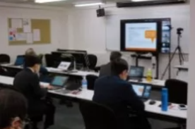
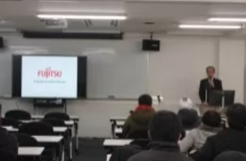
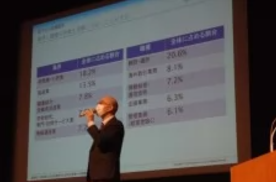

企業パートナーシップ
様々な業種、多くの企業とのパートナーシップにより就職後に活躍できる人材の育成に取り組んでいます。
富士通エフ・アイ・ピー・システムズ株式会社 元代表取締役社長（富士通グループ） 腰原貞利
近未来のICT社会を創造する、一流のITエンジニア・SEを目指しましょう。
日本販売促進協会 （日本販路コーディネータ協会） 研修担当部長 笠谷 圭児
マーケティング講義はすべてのマネジメントの基本です。必ず社会人としての礎になるでしょう。
株式会社 東京リーガルマインド 法人事業本部 営業企画部 マネージャー 朴 海燕
外国人採用・育成が、日本の高齢化や人口減少に対する重要な解決策となっています。
産学連携先企業
IT・Web学科
- 富士通株式会社
- 富士通Japan株式会社
- 株式会社ブーミング
- 株式会社ソーシャライズ
- 一般社団法人 日本マナー教育アカデミー
- 株式会社スペースリンク
- 株式会社MTM
- 株式会社グローアップ
- 株式会社グローバル・ヒューマン・キャピタル
AIプロジェクト学科
- 富士通株式会社
- 日総工産株式会社
- 株式会社UniBis
- 株式会社ソーシャライズ
ビジネスデザイン学科
- 株式会社ベジコープ
- 一般社団法人日本販路コーディネータ協会
- 株式会社ソーシャライズ
- 株式会社東京リーガルマインド
- 一般社団法人日本マナー教育アカデミー
- 株式会社グローアップ
- モノグローブイデア合同会社
文部科学大臣認定の職業実践専門課程による産学連携システム
教育課程編成委員会
企業の人材ニーズに即した実践的な教育を行うため、企業や産業界の委員を含め た教育課程編成委員会を年2回開催し、カリキュラムに反映しています。
企業からの講師による実習・演習
提携した企業から講師を招き、実践的な実習・演習を行っています。 提携先企業へのインターンシップを行います。
学校関係者評価委員会
学校の自己点検・自己評価に基づき、 企業や産業界からの委員が参画した委員会で学校評価を行っています。
情報公開
投稿の学則、財務情報をはじめ、カリキュラム、就職実績などの情報をホームページで公開しています。
インドネシア国立ボゴール農科大学と教育協定締結
インドネシア国立ボゴール農科大学(IPB)の学生が在学中に中央情報専門学校に入学し単位を取得することで、学士号と専門士を取得するダブル・ディプロマプログラムで、国内の専門学校では初の教育協定となります。留学生の受け入れから専門・職業教育にしっかり取り組み、 日本企業への就職を支援していきます。

インドネシア大使館での教育協定締結式 中央情報学園 岡本理事長、ヘリ駐日大使、IPB アリフ学長
インドネシア国立ボゴール農科大学(IPB) アリフ・サトリア学長
インドネシア国立ボゴール農科大学(IPB)の学生が在学中に中央情報専門学校に 入学し単位を取得することで、学士号と専門士を取得するダブル・ディプロマプログラムで、国内の専門学校では初の教育協定となります。留学生の受け入れから専門 ・職業教育にしっかり取り組み、日本企業への就職を支援していきます。
在本邦インドネシア共和国大使館 ヘリ・アフマディ駐日大使
この職業教育協定は、インドネシアと日本が必要とする最高の質の人材を生み出すことができると信じています。IPB生が専門知識を習得し、 将来エンジニアとして両国の懸け橋になってくれることを期待しています。